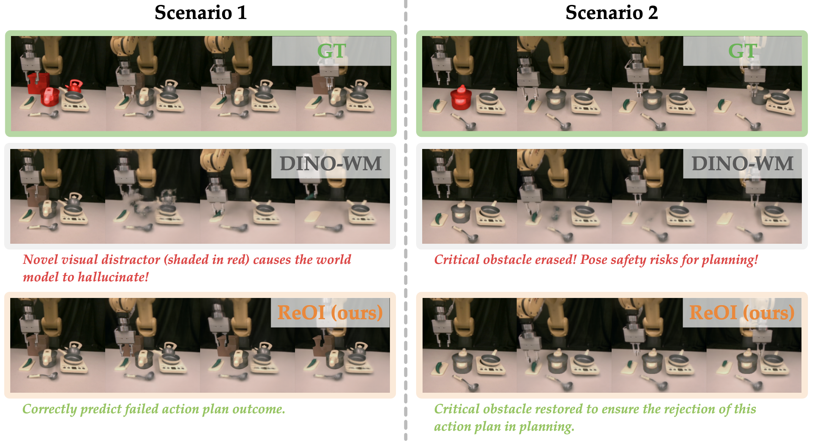
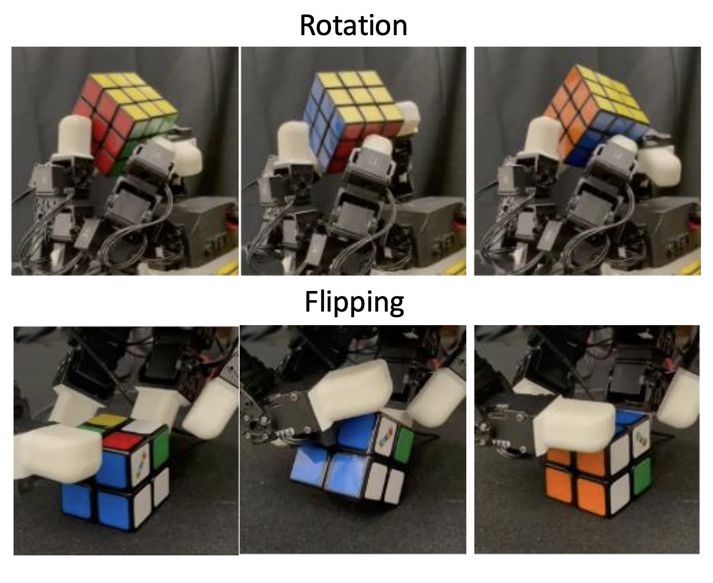

|
Yuxin Chen - 陈瑀昕 Hi there! I'm a third-year Ph.D. candidate at UC Berkeley, affiliated with the Berkeley Artificial Intelligence Research (BAIR).
I have the privilege of working with Prof. Masayoshi Tomizuka,
a distinguished member of National Academy of Engineering in the Mechanical Systems Control (MSC) Lab.
|

yuxinc [at] berkeley [dot] edu |
|
 Our paper on
Our paper on
Publication & Preprint* denotes equal contribution |

|
Yuxin Chen*, et al. Under review, 2025 |
|  |
Yuxin Chen*, Jianglan Wei*, Chenfeng Xu, Boyi Li, Masayoshi Tomizuka, Andrea Bajcsy, Ran Tian Under review, 2025 |
|  |
Shuqi Zhao, Ke Yang, Yuxin Chen, Chenran Li, Yichen Xie, Xiang Zhang, Changhao Wang, Masayoshi Tomizuka Under review, 2025 arXiv |

|
Yuxin Chen, Devesh K. Jha, Masayoshi Tomizuka, Diego Romeres ICRA, 2025 ICRA workshop on safe VLM, 2025 (Oral) arXiv |

|
Tianqi Zhang, Zheng Wu, Yuxin Chen, Yixiao Wang, Boyuan Liang, Scott Moura, Masayoshi Tomizuka, Mingyu Ding, Wei Zhan ICRA, 2025 (Best Paper Finalist) arXiv / Code |

|
Shuqi Zhao*, Xinghao Zhu*, Yuxin Chen, Chenran Li, Xiang Zhang, Mingyu Ding, Masayoshi Tomizuka Under review, 2024 arXiv |

|
Yuxin Chen*, Chen Tang*, Chenran Li, Ran Tian, Peter Stone, Masayoshi Tomizuka, Wei Zhan Under review, 2024 arXiv / Project Page / Video |

|
Yicheng Xu*, Yuxin Chen*, Jiahao Nie, Yusong Wang, Huiping Zhuang, Manabu Okumura NeurIPS, 2024 arXiv / Code |

|
Yuxin Chen, Chen Tang, Ran Tian, Chenran Li, Jinning Li, Masayoshi Tomizuka, Wei Zhan RLC, 2024 AAMAS, 2024 arXiv / Code |

|
Parker Ewen, Adam Li, Yuxin Chen, Steven Hong, Ram Vasudevan RA-L, 2022 arXiv / Project Page / Code / Video |

|
Parker Ewen, Jean-Pierre Sleiman, Yuxin Chen, Wei-Chun Lu, Marco Hutter, Ram Vasudevan ICRA, 2021 arXiv / Video |

|
Matthew M Romano, Yuxin Chen, Prince Kuevor, Owen Marshall, Ella Atkins AIAA AVIATION, 2021 arXiv / Video |
Education |
|
UC Berkeley, Berkeley, CA • PhD in Mechanical Engineering, Robotics & Control (2022 to Present) |
|
|
University of Michigan, Ann Arbor, MI • MS in Robotics (2020 to 2022) • BS in Aerospace (2018 to 2020) |
|
Shanghai Jiao Tong University, Shanghai, China • BS in Mechanical Engineering (2016 to 2020) |
|
Stolen from Jon Barron |